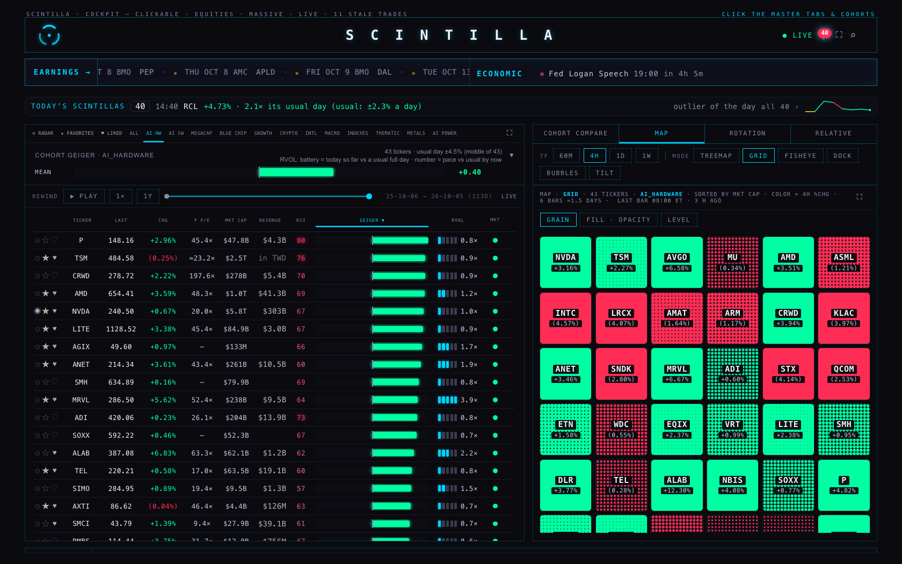
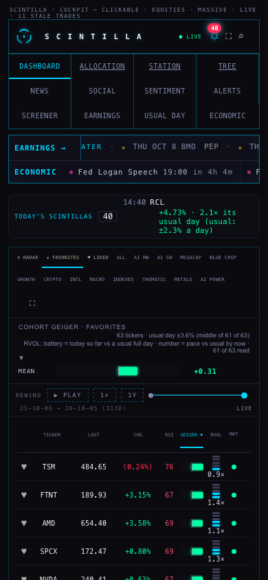

TR1 · THE TREE ADOPTED BESIDE THE SECTORS · THE INDEX LAYER MAPPED
6 Oct 2026 · prepared, nothing applied · no table written, no universe change, no deploy · branch hub/tr1-tree-index-20261006
1 · THE HUB BEFORE AND AFTER — NO SCREEN CHANGES

AI HARDWARE at 1680 wide: the same 43 names, the same tabs, the same map. Only live prices moved between the two runs.

The phone, 390 wide: the same 63 names on the opening board.
2 · WHAT IS ADOPTED
THE MARKET
└ AI
└ AI ACCELERATORS & LOGIC · 13 companies · 3 funds · also under SEMICONDUCTORS · spine SMH
└ MEMORY & STORAGE · 6 companies · 1 funds · also under SEMICONDUCTORS · spine DRAM
└ AI NETWORKING & OPTICAL · 14 companies · 2 funds · spine IYZ
└ AI SERVERS & DATACENTER KIT · 4 companies · 1 funds · spine AGIX
└ NEOCLOUDS & AI MINERS · 12 companies · also under CRYPTO
└ DATACENTER PROPERTY · 4 companies · 2 funds · also under REAL ESTATE (sector) · spine XLRE
└ AI SOFTWARE & DATA PLATFORMS · 16 companies · 3 funds · also under SOFTWARE & INTERNET · spine IGV
└ AI POWERTRAIN · 12 companies · 3 funds · also under ENERGY & POWER · spine URA
└ ROBOTICS & AUTOMATION · 5 companies · 1 funds · also under INDUSTRIAL · spine BOTZ
└ ENERGY & POWER
└ NUCLEAR & URANIUM · 5 companies · 1 funds · spine URA
└ SOLAR & RENEWABLE · 6 companies · 1 funds · spine TAN
└ OIL & GAS · PRODUCERS · 7 companies · 3 funds · spine XOP
└ OIL & GAS · PIPELINES · 4 companies · 1 funds · spine XLE
└ OIL & GAS · REFINERS · 3 companies · 1 funds · spine XLE
└ OIL & GAS · SERVICES · 3 companies · 1 funds · spine IEZ
└ REGULATED UTILITIES · 24 companies · 3 funds · spine XLU
└ INDEPENDENT POWER · 4 companies · 1 funds · spine XLU
└ GRID & ELECTRICAL EQUIPMENT · 9 companies · 2 funds · also under INDUSTRIAL · spine PAVE
└ FRONTIER
└ SPACE · 11 companies · 1 funds · spine ARKX
└ QUANTUM · 4 companies · 1 funds · spine QTUM
└ AUTONOMY, eVTOL & DRONES · 6 companies
└ DEFENCE TECH · 5 companies · 1 funds · also under INDUSTRIAL · spine ITA
└ FINANCE
└ PAYMENTS & FINTECH · 15 companies · 2 funds · also under SOFTWARE & INTERNET · spine IPAY
└ BIG BANKS & BROKERS · 9 companies · 3 funds · spine IYG
└ REGIONAL BANKS · 7 companies · 2 funds · spine KRE
└ EXCHANGES & MARKET DATA · 4 companies · 1 funds · spine IAI
└ ASSET MANAGERS & ALTS · 4 companies · 1 funds · spine XLF
└ INSURANCE · 6 companies · 2 funds · spine KIE
└ HEALTH
└ BIG PHARMA · 9 companies · 2 funds · spine IHE
└ BIOTECH · 12 companies · 2 funds · spine XBI
└ MEDTECH · 10 companies · 1 funds · spine IHI
└ LIFE-SCIENCE TOOLS & DIAGNOSTICS · 5 companies · 1 funds · spine XLV
└ INSURERS & HEALTH SERVICES · 9 companies · 1 funds · spine IHF
└ MATERIALS & METALS
└ PRECIOUS METALS · 10 companies · 6 funds · spine GLD
└ COPPER & STEEL · 7 companies · 2 funds · spine COPX
└ CRITICAL MINERALS & LITHIUM · 6 companies · 2 funds · spine REMX
└ CHEMICALS & BUILDING MATERIALS · 11 companies · 2 funds · spine XLB
└ PACKAGING · 3 companies · 1 funds · spine XLB
└ INDUSTRIAL
└ AEROSPACE & DEFENCE PRIMES · 12 companies · 1 funds · spine ITA
└ MACHINERY & CAPITAL GOODS · 12 companies · 2 funds · spine XLI
└ RAIL, FREIGHT & AIRLINES · 9 companies · 2 funds · spine IYT
└ HOUSING & HOME IMPROVEMENT · 3 companies · 2 funds · also under CONSUMER · spine XHB
└ BUSINESS SERVICES & PAYROLL · 4 companies · 1 funds · spine XLI
└ CONSUMER
└ AUTOS & EV · 9 companies · 2 funds · spine XLY
└ RETAIL & E-COMMERCE (US) · 9 companies · 2 funds · spine XRT
└ TRAVEL & LEISURE · 8 companies · 1 funds · spine PEJ
└ RESTAURANTS · 4 companies · 1 funds · spine XLY
└ CONSUMER STAPLES · 16 companies · 2 funds · spine XLP
└ MEDIA & TELECOM · 9 companies · 2 funds · spine XLC
└ CRYPTO
└ CRYPTO EQUITIES · 12 companies
└ INTERNATIONAL
└ CHINA (ADRs) · 9 companies · 3 funds · spine FXI
└ EUROPE (listed here) · 8 companies · 4 funds · spine EZU
└ ASIA-PACIFIC ex-CHINA · 4 companies · 3 funds · spine EWJ → EWT once served
└ CANADA · 9 companies · 1 funds · spine EFA → EWC once served
└ LATIN AMERICA · 4 companies · 1 funds · spine EEM → EWZ once served
└ INDEX LAYER (reference lines)
└ US BROAD & SIZE · 11 funds · spine SPY
└ WORLD & REGIONS · 7 funds · spine VT → ACWI once served · waiting: ACWI URTH
└ COUNTRIES · 11 funds · waiting: EWT INDA EWZ EWC
└ GROWTH & VALUE · 5 funds · waiting: SPYG SPYV
└ FACTORS · 6 funds · waiting: USMV VLUE
└ SECTOR FUNDS
└ SPDR SECTORS (the keep) · 11 funds
└ EQUAL-WEIGHT SECTORS · 11 funds
└ VANGUARD SECTORS (copies) · 11 funds
└ iSHARES SECTORS (copies) · 11 funds
└ MACRO · 12 funds
└ THEME FUNDS (each is its cohort's spine line) · 50 funds
└ TECHNOLOGY (sector)
└ SEMICONDUCTORS
└ SEMICAP, MATERIALS & CHIP DESIGN · 13 companies · 2 funds · also under AI · spine SMH
└ ANALOG, RF & POWER SEMIS · 11 companies · 2 funds · spine SOXX
└ SOFTWARE & INTERNET
└ CYBERSECURITY · 7 companies · 1 funds · spine CIBR
└ INTERNET & CONSUMER PLATFORMS · 18 companies · 1 funds · also under CONSUMER · spine FDN
└ IT SERVICES & CONSULTING · 3 companies · 1 funds · spine IGM
└ REAL ESTATE (sector)
└ REITs (property) · 10 companies · 3 funds · spine VNQ
└ TELECOM TOWERS · 3 companies · 1 funds · spine XLRE
└ MAGNIFICENT 7 · 8 companies · 2 funds · spine MAGS
3 · THE INDEX LAYER, MAPPED
| FAMILY | FUND | WHAT IT TRACKS | TODAY | VERDICT | AGAINST | MOVES WITH IT | WHY |
|---|---|---|---|---|---|---|---|
| US broad | SPY | S&P 500 | served | keep | the market line the Hub already draws | ||
| US broad | VOO | S&P 500 | not served | leave out | SPY | not measured | the same index as SPY |
| US broad | IVV | S&P 500 | not served | leave out | SPY | not measured | the same index as SPY |
| US broad | SPLG | S&P 500 | not served | leave out | SPY | not measured | the same index as SPY |
| US broad | QQQ | Nasdaq-100 | served | keep | the Hub already draws it | ||
| US broad | QQQM | Nasdaq-100 | not served | leave out | QQQ | not measured | the same index as QQQ |
| US broad · equal weight | QQQE | Nasdaq-100 equal weight | served | keep | QQQ | 0.92 | the equal-weight twin of QQQ |
| US broad | DIA | Dow Jones Industrial Average | served | keep | the Hub already draws it | ||
| US broad · equal weight | RSP | S&P 500 equal weight | served | keep | SPY | 0.78 | the equal-weight twin of SPY (Alan: 'the equal-weight indexes') |
| US broad | VTI | CRSP US total market | served | keep | SPY | 0.99 | the whole US market, small caps included |
| US broad | ITOT | S&P total market | served | near-copy | VTI | 1.00 | a second total-market fund |
| US broad | IWV | Russell 3000 | served | near-copy | VTI | 1.00 | a third total-market fund |
| US broad | IWB | Russell 1000 | not served | leave out | SPY | not measured | large caps again; SPY and VTI bracket it |
| US size | MDY | S&P MidCap 400 | served | keep | the mid-cap line | ||
| US size | IJH | S&P MidCap 400 | not served | leave out | MDY | not measured | the same index as MDY |
| US size | VO | CRSP mid cap | not served | leave out | MDY | not measured | mid caps by another index maker; MDY is served |
| US size | IWM | Russell 2000 | served | keep | the small-cap line the Hub already draws | ||
| US size | IJR | S&P SmallCap 600 | served | keep | IWM | 0.94 | small caps with a profit screen; behaves differently enough from IWM to keep both |
| US size | VB | CRSP small cap | not served | leave out | IWM | not measured | small caps a third way; IWM and IJR are served |
| SPDR sector | XLK | S&P 500 technology | served | keep | the SECTORS side of the Hub's compare toggle - unchanged | ||
| Invesco equal-weight sector | RSPT | S&P 500 technology, equal weight | served | keep | XLK | 0.94 | the same names as the SPDR with every name counted the same - shows when the giants are doing the work |
| Vanguard sector | VGT | MSCI US technology (large, mid and small) | served | near-copy | XLK | 0.99 | the sector again, with mid and small caps added |
| iShares sector | IYW | Dow Jones / Russell US technology | served | near-copy | XLK | 0.97 | the sector again by a third index maker |
| SPDR sector | XLF | S&P 500 financials | served | keep | the SECTORS side of the Hub's compare toggle - unchanged | ||
| Invesco equal-weight sector | RSPF | S&P 500 financials, equal weight | served | keep | XLF | 0.94 | the same names as the SPDR with every name counted the same - shows when the giants are doing the work |
| Vanguard sector | VFH | MSCI US financials (large, mid and small) | served | near-copy | XLF | 0.99 | the sector again, with mid and small caps added |
| iShares sector | IYF | Dow Jones / Russell US financials | served | near-copy | XLF | 0.97 | the sector again by a third index maker |
| SPDR sector | XLE | S&P 500 energy | served | keep | the SECTORS side of the Hub's compare toggle - unchanged | ||
| Invesco equal-weight sector | RSPG | S&P 500 energy, equal weight | served | keep | XLE | 0.98 | the same names as the SPDR with every name counted the same - shows when the giants are doing the work |
| Vanguard sector | VDE | MSCI US energy (large, mid and small) | served | near-copy | XLE | 0.99 | the sector again, with mid and small caps added |
| iShares sector | IYE | Dow Jones / Russell US energy | served | near-copy | XLE | 0.99 | the sector again by a third index maker |
| SPDR sector | XLV | S&P 500 health care | served | keep | the SECTORS side of the Hub's compare toggle - unchanged | ||
| Invesco equal-weight sector | RSPH | S&P 500 health care, equal weight | served | keep | XLV | 0.89 | the same names as the SPDR with every name counted the same - shows when the giants are doing the work |
| Vanguard sector | VHT | MSCI US health care (large, mid and small) | served | near-copy | XLV | 0.98 | the sector again, with mid and small caps added |
| iShares sector | IYH | Dow Jones / Russell US health care | served | near-copy | XLV | 0.99 | the sector again by a third index maker |
| SPDR sector | XLI | S&P 500 industrials | served | keep | the SECTORS side of the Hub's compare toggle - unchanged | ||
| Invesco equal-weight sector | RSPN | S&P 500 industrials, equal weight | served | keep | XLI | 0.94 | the same names as the SPDR with every name counted the same - shows when the giants are doing the work |
| Vanguard sector | VIS | MSCI US industrials (large, mid and small) | served | near-copy | XLI | 0.99 | the sector again, with mid and small caps added |
| iShares sector | IYJ | Dow Jones / Russell US industrials | served | near-copy | XLI | 0.96 | the sector again by a third index maker |
| SPDR sector | XLY | S&P 500 consumer discretionary | served | keep | the SECTORS side of the Hub's compare toggle - unchanged | ||
| Invesco equal-weight sector | RSPD | S&P 500 consumer discretionary, equal weight | served | keep | XLY | 0.79 | the same names as the SPDR with every name counted the same - shows when the giants are doing the work |
| Vanguard sector | VCR | MSCI US consumer discretionary (large, mid and small) | served | near-copy | XLY | 0.99 | the sector again, with mid and small caps added |
| iShares sector | IYC | Dow Jones / Russell US consumer discretionary | served | near-copy | XLY | 0.94 | the sector again by a third index maker |
| SPDR sector | XLP | S&P 500 consumer staples | served | keep | the SECTORS side of the Hub's compare toggle - unchanged | ||
| Invesco equal-weight sector | RSPS | S&P 500 consumer staples, equal weight | served | keep | XLP | 0.95 | the same names as the SPDR with every name counted the same - shows when the giants are doing the work |
| Vanguard sector | VDC | MSCI US consumer staples (large, mid and small) | served | near-copy | XLP | 0.98 | the sector again, with mid and small caps added |
| iShares sector | IYK | Dow Jones / Russell US consumer staples | served | near-copy | XLP | 0.94 | the sector again by a third index maker |
| SPDR sector | XLU | S&P 500 utilities | served | keep | the SECTORS side of the Hub's compare toggle - unchanged | ||
| Invesco equal-weight sector | RSPU | S&P 500 utilities, equal weight | served | keep | XLU | 0.99 | the same names as the SPDR with every name counted the same - shows when the giants are doing the work |
| Vanguard sector | VPU | MSCI US utilities (large, mid and small) | served | near-copy | XLU | 0.99 | the sector again, with mid and small caps added |
| iShares sector | IDU | Dow Jones / Russell US utilities | served | near-copy | XLU | 0.99 | the sector again by a third index maker |
| SPDR sector | XLB | S&P 500 materials | served | keep | the SECTORS side of the Hub's compare toggle - unchanged | ||
| Invesco equal-weight sector | RSPM | S&P 500 materials, equal weight | served | keep | XLB | 0.98 | the same names as the SPDR with every name counted the same - shows when the giants are doing the work |
| Vanguard sector | VAW | MSCI US materials (large, mid and small) | served | near-copy | XLB | 0.97 | the sector again, with mid and small caps added |
| iShares sector | IYM | Dow Jones / Russell US materials | served | near-copy | XLB | 0.91 | the sector again by a third index maker |
| SPDR sector | XLRE | S&P 500 real estate | served | keep | the SECTORS side of the Hub's compare toggle - unchanged | ||
| Invesco equal-weight sector | RSPR | S&P 500 real estate, equal weight | served | keep | XLRE | 0.95 | the same names as the SPDR with every name counted the same - shows when the giants are doing the work |
| Vanguard sector | VNQ | MSCI US real estate (large, mid and small) | served | near-copy | XLRE | 0.98 | the sector again, with mid and small caps added |
| iShares sector | IYR | Dow Jones / Russell US real estate | served | near-copy | XLRE | 0.98 | the sector again by a third index maker |
| SPDR sector | XLC | S&P 500 communication services | served | keep | the SECTORS side of the Hub's compare toggle - unchanged | ||
| Invesco equal-weight sector | RSPC | S&P 500 communication services, equal weight | served | keep | XLC | 0.88 | the same names as the SPDR with every name counted the same - shows when the giants are doing the work |
| Vanguard sector | VOX | MSCI US communication services (large, mid and small) | served | near-copy | XLC | 0.96 | the sector again, with mid and small caps added |
| iShares sector | IYZ | Russell US telecommunications (carriers and gear) | served | keep | XLC | 0.20 | NOT a copy: telecom only, while the sector fund is mostly Alphabet and Meta |
| Vanguard style | VUG | CRSP US large growth | served | keep | the growth line served today | ||
| Vanguard style | VTV | CRSP US large value | served | keep | the value line served today | ||
| Vanguard style | MGK | CRSP US mega-cap growth | served | near-copy | VUG | 1.00 | growth, the biggest names only |
| S&P style | SPYG | S&P 500 Growth | not served | ADMIT | VUG | not measured | Alan: 'the S&P growth'. S&P's recipe adds momentum to the growth test; it sits beside SPY and the SPDR sectors |
| S&P style | SPYV | S&P 500 Value | not served | ADMIT | VTV | not measured | Alan: 'the S&P value' |
| iShares style | IVW | S&P 500 Growth | not served | leave out | SPYG | not measured | the same index as SPYG - one of the pair is enough; SPYG is the same family as SPY and the XL sectors |
| iShares style | IVE | S&P 500 Value | not served | leave out | SPYV | not measured | the same index as SPYV |
| iShares style | IWF | Russell 1000 Growth | not served | leave out | VUG | not measured | a third recipe for the same split |
| iShares style | IWD | Russell 1000 Value | not served | leave out | VTV | not measured | a third recipe for the same split |
| MSCI factor | MTUM | MSCI USA Momentum | served | keep | Alan: 'MSCI momentum' | ||
| MSCI factor | QUAL | MSCI USA Quality | served | keep | Alan: 'quality' | ||
| MSCI factor | USMV | MSCI USA Minimum Volatility | not served | ADMIT | SPLV | not measured | Alan: 'low vol'. MSCI's is a whole low-risk portfolio; SPLV is simply the 100 calmest S&P names |
| MSCI factor | VLUE | MSCI USA Enhanced Value | not served | ADMIT | VTV | not measured | Alan: 'value'. Completes MSCI's four |
| MSCI factor | SIZE | MSCI USA Low Size | not served | leave out | RSP | not measured | trades thinly (ESTIMATE: 10-20 thousand shares a day): one thin fund failing the close cross-check holds the whole set. RSP and IWM already draw the size effect |
| S&P factor | SPLV | S&P 500 Low Volatility | served | keep | the low-vol line served today | ||
| dividend | SCHD | Dow Jones US Dividend 100 | served | keep | the dividend line served today | ||
| world | VT | FTSE Global All Cap | served | keep | the whole world in one line (stands in for MSCI's until ACWI is served) | ||
| MSCI world | ACWI | MSCI All Country World | not served | ADMIT | VT | not measured | Alan: 'URTH and ACWI'. MSCI's whole-world line: ACWI = URTH + EEM in MSCI's own arithmetic |
| MSCI world | URTH | MSCI World (developed markets only) | not served | ADMIT | VT | not measured | Alan: 'URTH and ACWI'. The developed world; about 70% of it is the US |
| world | VXUS | FTSE Global All Cap ex-US | served | keep | the world without the US | ||
| MSCI world | ACWX | MSCI ACWI ex-US | not served | leave out | VXUS | not measured | the world without the US again |
| MSCI region | EFA | MSCI EAFE (developed ex-US and Canada) | served | keep | the developed-markets line, and the MSCI piece that adds up with URTH | ||
| Vanguard region | VEA | FTSE Developed ex-US | not served | leave out | EFA | not measured | EFA plus Canada and small caps; a near-copy by construction |
| MSCI region | IEFA | MSCI EAFE investable (adds small caps) | not served | leave out | EFA | not measured | EFA with small caps |
| MSCI region | EEM | MSCI Emerging Markets | served | keep | the emerging-markets line | ||
| Vanguard region | VWO | FTSE Emerging (no Korea) | not served | leave out | EEM | not measured | emerging markets by FTSE: leaves Korea out, otherwise the same countries |
| MSCI region | IEMG | MSCI Emerging investable | not served | leave out | EEM | not measured | EEM with small caps |
| MSCI region | EZU | MSCI Eurozone | served | keep | the euro-area line | ||
| Vanguard region | VGK | FTSE Europe (adds UK, Switzerland) | not served | leave out | EZU | not measured | EZU and EWU together already cover it; a later choice |
| MSCI country | EWJ | MSCI Japan | served | keep | served today | ||
| MSCI country | EWG | MSCI Germany | served | keep | served today | ||
| MSCI country | EWU | MSCI United Kingdom | served | keep | served today | ||
| MSCI country | EWY | MSCI South Korea | served | keep | served today | ||
| MSCI country | MCHI | MSCI China | served | keep | China, the broad line | ||
| China | FXI | FTSE China 50 (Hong Kong-listed giants) | served | near-copy | MCHI | 0.94 | China's 50 biggest; rides with MCHI |
| China | ASHR | CSI 300 (mainland A-shares) | served | keep | MCHI | 0.60 | the mainland market, a different animal from the Hong Kong lines |
| MSCI country | EWT | MSCI Taiwan | not served | ADMIT | Taiwan has no line today; TSM and the Taiwanese chip names have nothing to stand against | ||
| MSCI country | INDA | MSCI India | not served | ADMIT | India is not on the board at all - no fund, no single name | ||
| MSCI country | EWZ | MSCI Brazil | not served | ADMIT | the LATIN AMERICA cohort has no reference line | ||
| MSCI country | EWC | MSCI Canada | not served | ADMIT | the CANADA cohort (9 names) has no reference line |
4 · THE ADMISSION LIST — TEN FUNDS, ONE SITTING WITH QRVO'S RETIREMENT
| FUND | FAMILY | WHAT IT TRACKS | WHY |
|---|---|---|---|
| SPYG | S&P style | S&P 500 Growth | Alan: 'the S&P growth'. S&P's recipe adds momentum to the growth test; it sits beside SPY and the SPDR sectors |
| SPYV | S&P style | S&P 500 Value | Alan: 'the S&P value' |
| USMV | MSCI factor | MSCI USA Minimum Volatility | Alan: 'low vol'. MSCI's is a whole low-risk portfolio; SPLV is simply the 100 calmest S&P names |
| VLUE | MSCI factor | MSCI USA Enhanced Value | Alan: 'value'. Completes MSCI's four |
| ACWI | MSCI world | MSCI All Country World | Alan: 'URTH and ACWI'. MSCI's whole-world line: ACWI = URTH + EEM in MSCI's own arithmetic |
| URTH | MSCI world | MSCI World (developed markets only) | Alan: 'URTH and ACWI'. The developed world; about 70% of it is the US |
| EWT | MSCI country | MSCI Taiwan | Taiwan has no line today; TSM and the Taiwanese chip names have nothing to stand against |
| INDA | MSCI country | MSCI India | India is not on the board at all - no fund, no single name |
| EWZ | MSCI country | MSCI Brazil | the LATIN AMERICA cohort has no reference line |
| EWC | MSCI country | MSCI Canada | the CANADA cohort (9 names) has no reference line |
5 · WEAK AREAS — THE EIGHT BIGGEST BY MARKET WEIGHT
| # | INDUSTRY | SECTOR | SHARE OF THE S&P 500 | WE HOLD | THREE CANDIDATES |
|---|---|---|---|---|---|
| 1 | Broadline Retail | Consumer Discretionary | 3.81% | AMZN outside the S&P we also hold MELI, PDD, BABA, JD (in LATAM / CHINA) | EBAY Ebay Inc · CPNG Coupang (outside the S&P) · ETSY Etsy (outside the S&P) |
| 2 | Heavy Electrical Equipment | Industrials | 0.40% | GEV outside the S&P we also hold BE, SMR, OKLO | GNRC Generac Holdings Inc · FLNC Fluence Energy (outside the S&P) · POWL Powell Industries (outside the S&P) |
| 3 | Health Care Distributors | Health Care | 0.33% | MCK | COR Cencora Inc · CAH Cardinal Health Inc · HSIC Henry Schein Inc |
| 4 | Packaged Foods & Meats | Consumer Staples | 0.28% | MDLZ | HSY Hershey Co/The · KHC Kraft Heinz Co/The · GIS General Mills Inc |
| 5 | Regional Banks | Financials | 0.27% | none we hold seven regional banks, but none of the six in the S&P 500 | FITB Fifth Third Bancorp · MTB M + T Bank Corp · HBAN Huntington Bancshares Inc |
| 6 | Life & Health Insurance | Financials | 0.27% | none | AFL Aflac Inc · MET Metlife Inc · PRU Prudential Financial Inc |
| 7 | Automotive Retail | Consumer Discretionary | 0.24% | ORLY | AZO Autozone Inc · CVNA Carvana Co · KMX CarMax (outside the S&P) |
| 8 | Environmental & Facilities Services | Industrials | 0.23% | WM | RSG Republic Services Inc · VLTO Veralto Corp · ROL Rollins Inc |
PAGE SPECS
What this page shows. Alan said yes to adopting CO1's cohort tree beside the S&P sectors, and that what goes on the Hub is decided after. So the tree is written into two brand-new tables, cohort_tree (one row per branch: its name, up to two parents, the fund it is measured against) and cohort_tree_members (who sits in each branch and why). The Hub builds its cohort tabs from a different table, ticker_cohorts, which this work does not read or write. Nothing has been applied: the coordinator runs the two files.
Section 1. The Hub page of this branch was opened twice in a hidden browser at each width. BEFORE is the Hub as it is: the live database answers 404 for both new table names. AFTER answers those two names with the loader's own rows, as if the tables were there. Sixteen screens were opened each time (the opening board, six cohort tabs, nine master tabs). What is compared is which names and tabs are on each screen, and the cohort map the page built, not prices, because prices move between two runs while the market is open. The Hub never asked for the new tables. I opened the pictures: both show the same board, map and tabs; the price column differs by cents. 5 write attempts by the page (YouTube player telemetry and one function call) were answered locally and never left the browser.
Section 2. The tree is CO1's, unchanged for companies. The index layer under it is rebuilt from section 3: world and regions, countries, growth and value, factors, and the four sector-fund families. "spine" is the fund a branch is measured against; "→ X once served" means X takes over after the admission. The dry run loaded the files into a throw-away Postgres on this Mac (not the live database), ran the load twice to show it repeats cleanly, ran the after-admission step, then the rollback, which left no table behind and the stand-in for the Hub's table byte-identical.
Section 3. "Moves with it" is the correlation of daily moves over the 126 sessions from 7 Apr to 5 Oct 2026 (closes CO1 pulled from the chart API). It exists only where both funds are served. For a fund we do not serve there is no measured number: "near-copy" then rests on the fact that it tracks the same index, or the same market by another index maker, and that is said in the WHY column. One measured surprise: IYZ moves only 0.20 with the communication-services sector fund, because it holds telecom carriers and not Alphabet or Meta, so it is kept as its own line.
Section 4. The ten enter as computed-but-not-shown funds: full bars on all 24 widths, Geiger and settled close, and no row on the board until Alan says so. The count, digest and scope come from the provider's builder run dry in scratch copies. The commands in order, every rollback and the bar backfill are in the provider branch, runbooks/TR1_INDEX_ADMISSION_WITH_QRVO_20261006.md. The brief asked for the sitting right after the 16:00 close; the prep can start then, but the visible steps have to wait for 00:00 ET or the percent column goes blank for every stock for the rest of the evening.
Section 5. From CO1's gaps list: S&P 500 industries where we hold none or one of the S&P's names, ranked by the industry's share of the S&P 500 (SSgA holdings file, 22 Sep). Two bigger rows are skipped because the S&P has a single name there and we hold it (Berkshire; Deere). A share is the whole industry's, not the missing names': Broadline Retail's 3.81% is almost all Amazon, which we hold. Names marked "outside the S&P" fill a row to three and come from knowledge of the industry, not from a provider read.
What could be wrong. Six months is one market regime: a near-copy at 0.99 this half-year is very likely a near-copy always, but the equal-weight numbers will move. Fund facts for the unserved funds (what they track, first trading date, how thinly SIZE trades) are from memory, not a provider read. Whether each of the ten passes the provider's 60-session gate and the close cross-check is not known until those keyed steps run on Fly.
What was not done. No table applied, no universe write, no pin rewritten, no deploy, no Fly machine. Holdings of URTH and ACWI were not fetched. The tree is not drawn on any Hub screen: that is the decision after this one.